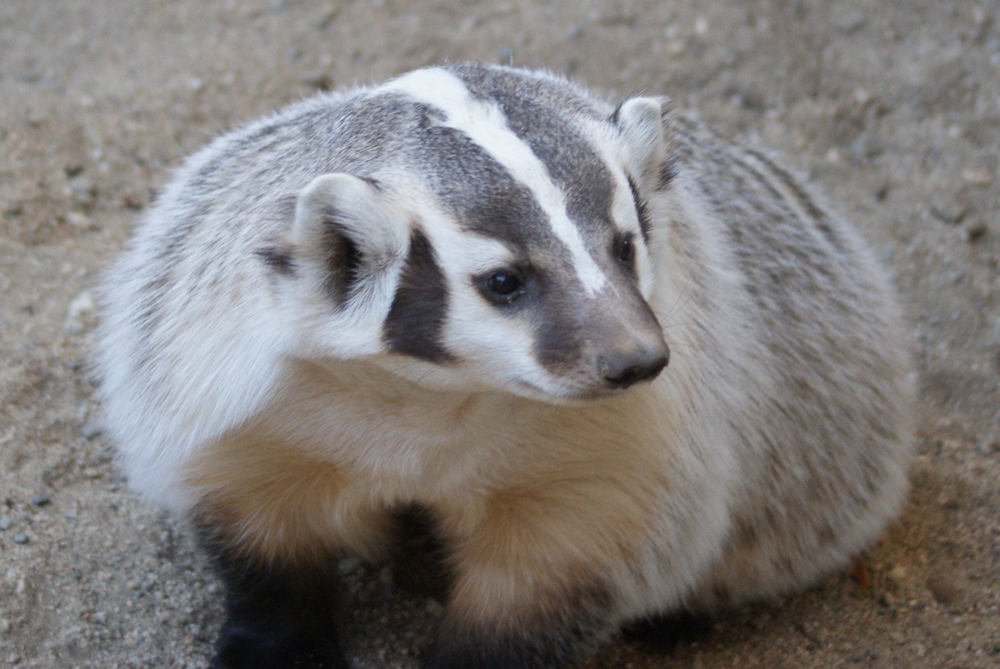
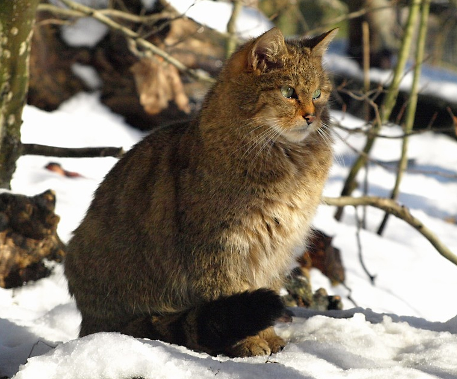
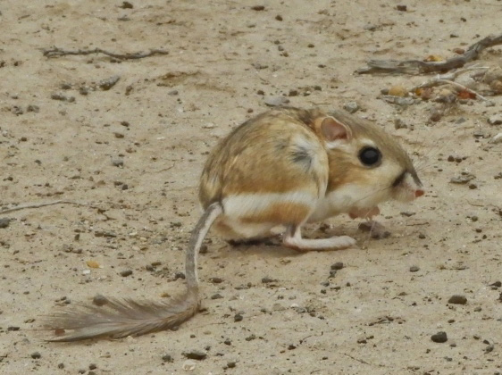
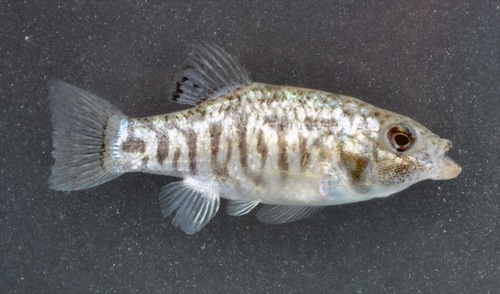
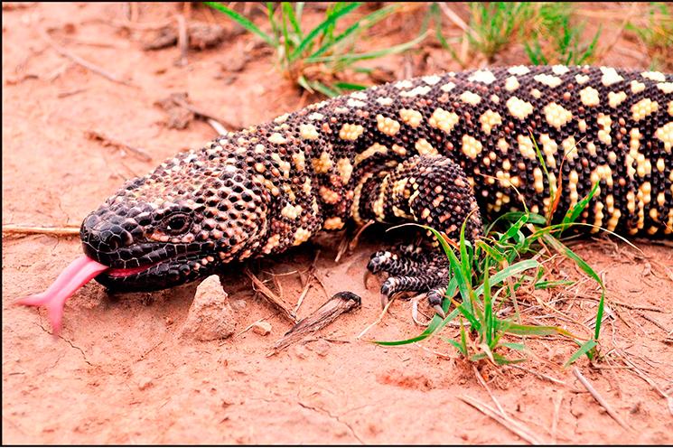
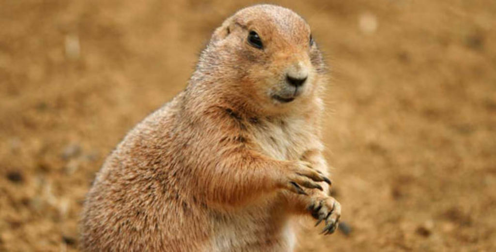

Tlalcoyote (Taxidea taxus)

Son mamíferos carnívoros que pueden llegar a pesar entre 6 y 12 kilogramos. Los machos suelen ser más grandes que la hembra. Por lo general, tienen el tamaño de un perro mediano. Es u mamífero plantígrado. Su pelaje es grueso y denso, llegando casi hasta el suelo. Su periodo de vida es entre 4 y 5 años. Su cabeza tiene colores blanco y negro en bandas alternas. De resto es negro, o marrón oscuro Da clic para volver al inicio
Gato montés (Felis silvestris)

Es un mamífero carnívoro. Su promedio de vida es de 13 a 14 años. Los machos suelen medir de 43 a 91 centímetros, sin cola. Las hembras entre 40 a 77 centímetros, sin cola. El peso del macho va de 5 a 8 kilogramos, el de la hembra de 3 a 5 kilogramos. Posee orejas grandes y puntiagudas, y su cuerpo es robusto, estilizado y flexible.
Da clic para volver al inicio
Zorra del desierto (Vulpes zerda)

Se trata de un mamífero carnívoro de la familia Canidae que puede llegar a medir entre 24 a 41 centímetros de longitud. La altura de un adulto puede ser de 20 centímetros. Su masa corporal es de 0,68 a 1,6 kilogramos. Cuenta con un fino hocico y una espesa cola. También orejas largas y pelaje corto. Da clic para volver al inicio
Rata canguro (Dipodomys)

Es un animal de hábitos nocturnos, son excavadores hábiles, sus extremidades posteriores son cuatro veces más largas que las anteriores, son capaces de saltar hasta tres metros. Cuenta con pestañas y pelos negros, con bigotes gris blanquecinos. Se apoyan en su cola para mantener el equilibrio. Llevan un tipo de alimentación hervíbora Da clic para volver al inicio
Cachorrito de cuatro Ciénegas (Cyprinodon bifasciatus)

Es un pez pequeño, que suele vivir entre 2 a 3 años. Cuando llega a la edad adulta puede medir hasta los 40 milímetros. Pertenece a la familia de los Cyprinodontidae. No cuenta con depredadores naturales, confía en los manantiales para que sean su hábitat y también su sistema de protección. No es un tipo de pez que se suela cazar Da clic para volver al inicio
Lagarto-escorpión de Lugo (Heloderma horridum)

Pertenece a la familia de los Heloderma. Su tamaño puede variar entre los 60 y 90 centímetros de largo, y puede pesar hasta 4 kilos. Los machos tienden a ser ligeramente más grandes que las hembras. Poseen una cabeza ancha y aplanada, con una enorme y larga cola. Sus patitas son cortas y robustas. El color del reptil varía del marrón al negro, y su piel se cubre de escamas granulares conocidas como osteodermos. Da clic para volver al inicio
Perrito llanero (Cynomys mexicanus)

De las características físicas del perro de las praderas, sobresale su cuerpo bajo y rechoncho, de entre 30 y 40 centímetros de longitud y de entre 0.5 y 1.5 kilogramos de peso. Tiene orejas redondas, cola corta (ésta mide 2.5-10 centímetros de largo), ojos pequeños y nariz también pequeña.
Cubre su cuerpo una capa de pelaje corto y suave color amarillo cenizo, y de acuerdo con la especie, presenta tonalidades oscuras. Existe un marcado dimorfismo sexual que es más notorio en la etapa del destete, pues las hembras tienden a perder peso y los machos, por el contrario, comen mayores cantidades de alimento y lucen más grandes. Da clic para volver al inicio